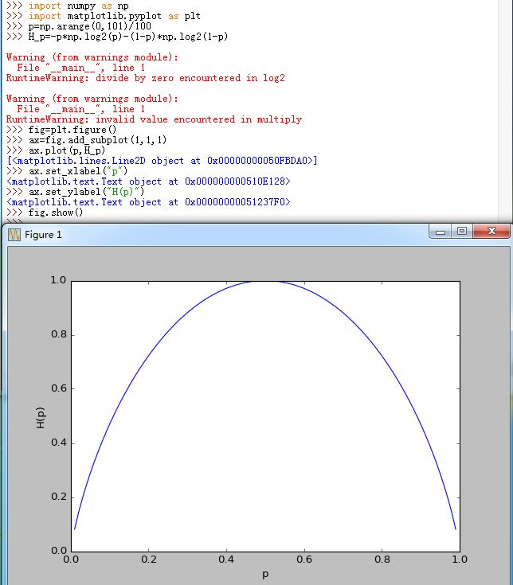
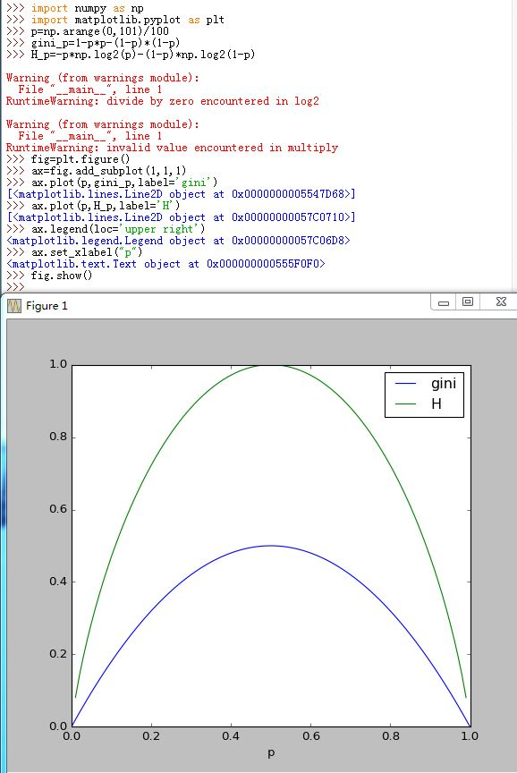
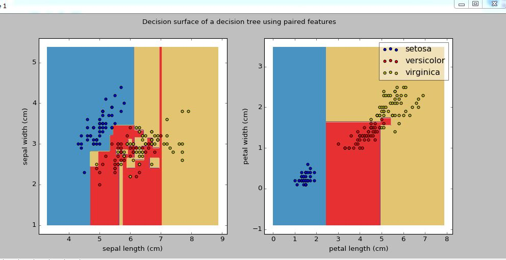
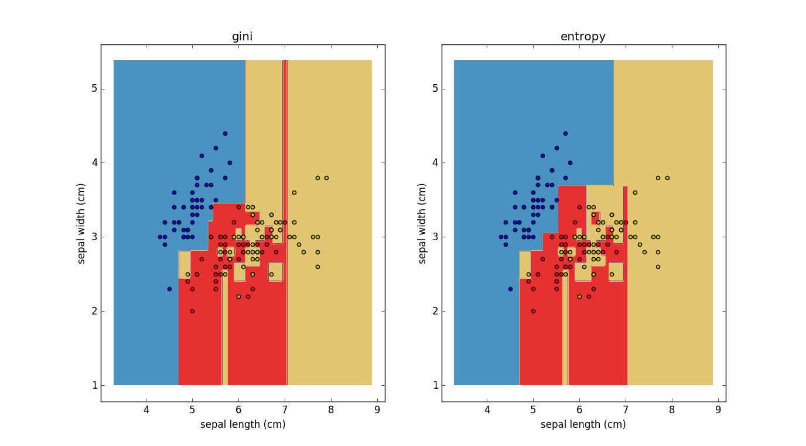
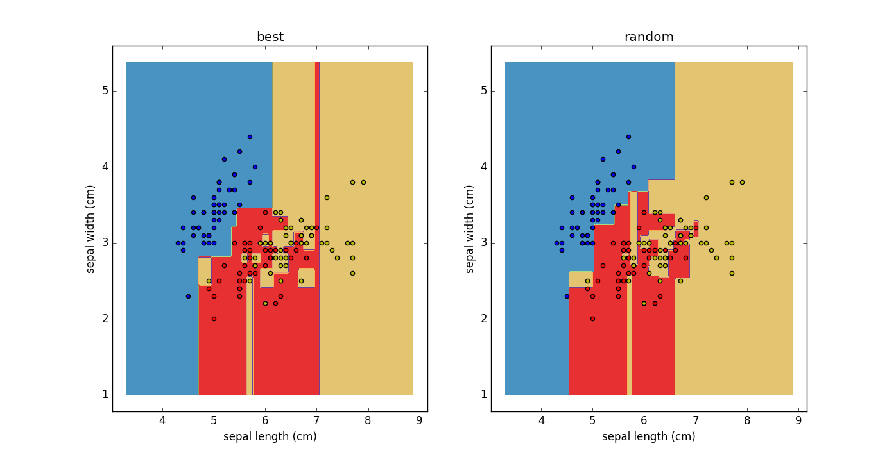
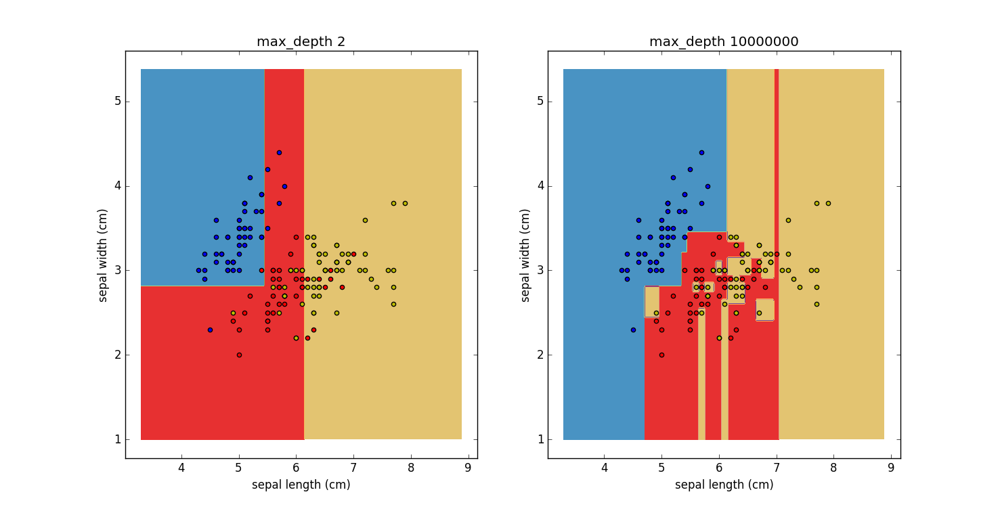
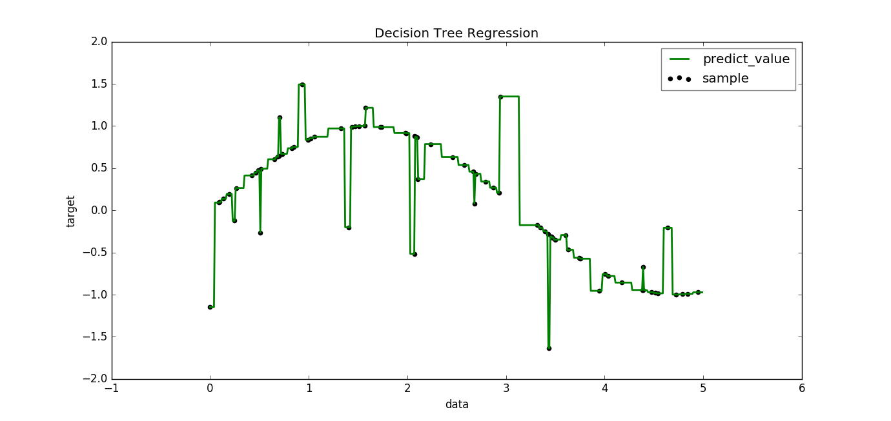
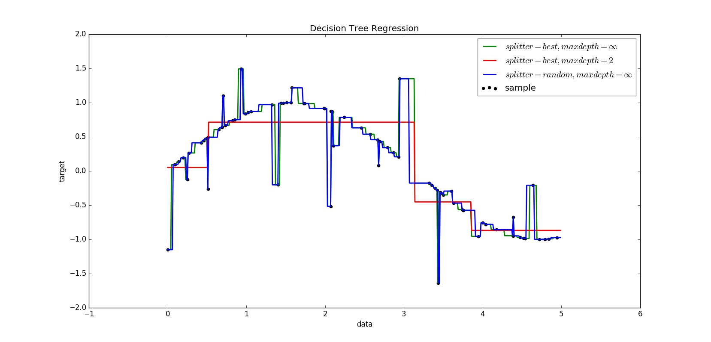
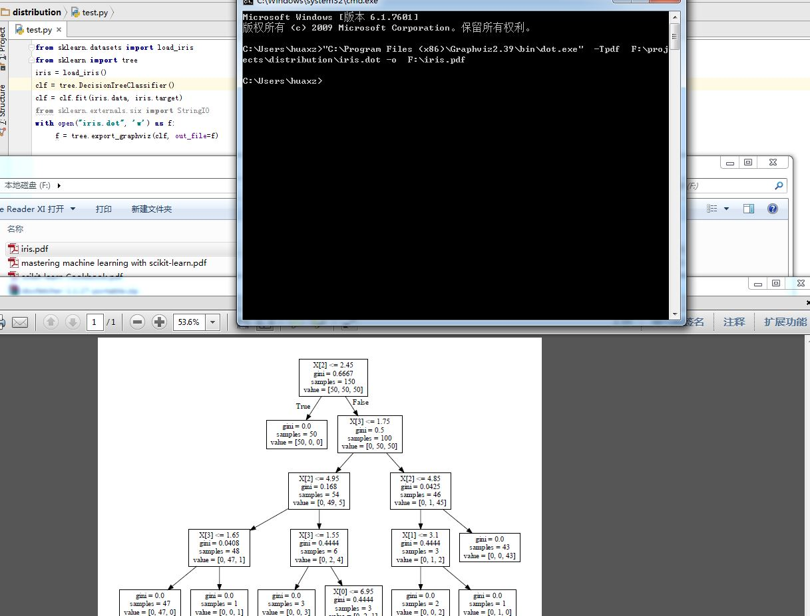

1.决策树是一种基本的分类与回归方法。本章讨论用于分类。
if-then规则的集合；也可以认为是定义在特征空间与类空间上的条件概率分布2.决策树学习通常包括3个步骤：
3.决策树定义：决策树模型是描述对实例进行分类的树形结构。树由结点和有向边组成。内部结点表示一个特征或者属性；叶子结点表示一个分类。
4.决策树的路径是互斥并且是完备的。
5.决策树还表示给定特征条件下类的条件概率分布：
将特征空间划分为互不相交的单元，在每个单元定义一个类的概率分布就构成了一个条件概率分布。
即设某个单元 \(S\) 内部有 \( N_s\) 个样本点，则它定义了一个条件概率分布 \(P(y=c_k/X),X \in S\)
即在单元 \(S\) 内部有 \( N_s\) 个样本点，但是整个单元都属于类：\(\hat c_k\)，其中， \(\hat c_k=\arg_{c_k} \max P(y=c_k/X),X \in S\)。即单元 \(S\) 内部的\( N_s\) 个样本点，哪个分类占优，则整个单元都属于该类
6.决策树的学习：假设给定训练集 \(T=\{(\mathbf x_1,y_1),(\mathbf x_2,y_2),\cdots,(\mathbf x_N,y_N)\}\)，其中 \(\mathbf x_i=(\mathbf x_i^{(1)},\mathbf x_i^{(2)},\cdots,\mathbf x_i^{(n)})\) 为输入实例， n 为特征个数； \(y_i \in \{1,2,\cdots,K\}\) 为类标记， \(i=1,2,\cdots,N\),N 为样本容量
步骤为：这一过程对应着特征空间的划分，也对应着决策树的构建
是否基本正确分类，通过后面介绍的指标来判断
1.决策树的生成对应着模型的局部选择（选择哪一个特征）；决策树的剪枝则考虑全局最优（损失函数最小化）
2.特征选取：关键是选取对训练数据有较强分类能力的特征。
若一个特征有更好的分类能力，则应该选择这个特征进行分类。分类能力通过信息增益或者信息增益比来体现
3.熵：表示随机变量不确定性的度量。设 \(X\) 是一个取有限个值的离散随机变量，其概率分布为：
\(P(X=\mathbf x_i)=p_i,i=1,2,\cdots,n\) , 则称随机变量 \(X\) 的熵定义为： $$H(X)=-\sum_{i=1}^{n}p_i\log p_i$$ 其中定义 \(0\log 0=0\)

4.设随机变量 \((X,Y)\) ，其联合概率分布为：\(P(X=\mathbf x_i,Y=y_j)=p_{ij},i=1,2,\cdots,n;j=1,2,\cdots,m\) 。 则条件熵 \(H(Y/X)\) 表示已知随机变量 \(X\) 的条件下随机变量 \(Y\) 的不确定性。
\(H(Y/X)\) 定义为： \(X\)给定条件下 \(Y\) 的条件概率分布的熵，对 \(X\) 概率分布的期望： $$H(Y/X)=\sum_{i=1}^{n}P_X(X=\mathbf x_i)H(Y/X=\mathbf x_i)$$
其算法见后面的描述
5.特征 A 对训练数据集 T 的信息增益 \(g(T,A)\) 定义为集合 T 的经验熵 \(H(T)\) 与特征 A 给定条件下 T 的经验熵 \(H(T/A)\) 之差。即： \(g(T,A)=H(T)-H(T/A)\)
集合 T 的经验熵其实就是 T 中样本的分类 \(Y\) 的经验熵，即\(H(Y)\)。写成\(H(T)\) 是为了便于理解信息增益。
6.决策树学习应用信息增益准则选择特征。给定训练集 T 和特征 A：
不同的特征往往具有不同的信息增益。信息增益大的特征具有更强的分类能力
7.信息增益算法：假设训练数据集为 T ， |T| 为其样本容量。假设有 K 个类别依次为 \(c_k,k=1,2,\cdots,K\)。设 \(|C_k|\) 为属于类 \(c_k\) 的样本个数，则有：\(\sum_{k=1}^{K}|C_k|=|T|\)
设特征 A 有个 n 个不同的取值：\(\{a_1,a_2,\cdots,a_n\}\) ，根据特征 A 的取值将 T 划分出 n 个子集：\( T_1,T_2,\cdots,T_n\)，\(|T_i|\) 为对应的 \(T_i\)中的样本个数，则 \(\sum_{i=1}^{n}|T_i|=|T|\)
设集合 \(T_i\) 中属于类 \(c_k\) 的样本集合为： \(T_{ik}\),其样本个数为：\(|T_{ik}|\)
它就是训练数据集 T 中，分类 \(Y\) 的概率估计\(\hat P(Y=c_k)=\frac{|C_k|}{|T|}\) 计算得到的经验熵。
- 它使用了特征 A 的概率估计：\(\hat P(X^{(A)}=a_i)=\frac{|T_i|}{|T|}\)
- 它使用了经验条件熵：\(\hat H(T/X^{(A)}=a_i)=\sum_{k=1}^{K} -( \frac{|T_{ik}|}{|T_i|}\log\frac{|T_{ik}|}{|T_i|})\)，其中使用了条件概率估计 \(\hat P(Y=c_k/X^{(A)}=a_i)=\frac{|T_{ik}|}{|T_i|}\)(意义是：在训练集的子集 \(T_i\)中， Y 的分布）
熵越大，则表示越混乱；熵越小表示越有序。因此信息增益表示混乱的减少程度（或者说是有序的增加程度）
8.以信息增益作为划分训练集的特征选取方案，存在偏向于选取值较多的特征的问题。公式：
$$g(T,A)=H(T)-H(T/A)=\sum_{i=1}^{n}\frac{|T_i|}{|T|}\sum_{k=1}^{K} -( \frac{|T_{ik}|}{|T_i|}\log\frac{|T_{ik}|}{|T_i|})$$
当极限情况下A将每一个样本都分到一个节点当中去的时候（即每个节点中有且仅有一个样本），此时 \(\frac{|T_{ik}|}{|T_i|}=1, i=1,2,\cdots,n\) 后面的括号部分为0.也就是条件熵部分为0，而条件熵的最小值为0，这意味着该情况下的信息增益达到了最大值。然而，我们知道这个特征A显然不是最佳选择。
可以通过定义信息增益比来解决。特征 A 对训练集 T 的信息增益比 \(g_R(T,A)\) 定义为信息增益 \(g(T,A)\) 与训练数据集 T 关于特征 A 的值的熵 \(H_A(T)\) 之比：
$$g_R(T,A)=\frac{g(T,A)}{H_A(T)},H_A(D)=-\sum_{i=1}^{n}\frac{|T_i|}{|T|}\log\frac{|T_i|}{|T|}$$
\(H_A(T)\) 表征了特征 A 对训练集 T 的分辨能力（但不表征它对 分类\(Y)\的分辨能力，比如 A 将 T 切分成均匀的 num 块，但是这些块上可能 Y 都是相同的）
1.ID3 生成算法：核心是在决策树的每个结点上应用信息增益准则选择特征，递归地构建决策树。
从根结点开始，计算结点所有可能的特征的信息增益，选择信息增益最大的特征作为结点的特征，由该特征划分出子结点（局部最优)。
再对子结点递归地调用以上方法，构建决策树。直到所有特征的信息增益均很小或者没有特征可以选择为止。最后得到一个决策树
如果不设置特征信息增益的下限，则可能会使得每个叶子都只有一个样本点，从而划分太细
ID3相当于用极大似然法进行概率模型的选择。
特殊情况： T 的分类集合只有一个分类
特殊情况： T 的特征集合为空
决策树上单条路径上的特征集逐渐缩小
- 决策树可能只是用到特征集中的部分特征
- ID3 算法只有树的生成算法。该算法生成的树容易产生过拟合。即对训练集匹配很好，但是预测测试集效果较差
2.C4.5 生成算法：与 ID3 算法相似，但是 C4.5 算法在生成过程中用信息增益比来选择特征。
特殊情况： T 的分类集合只有一个分类
特殊情况： T 的特征集合为空
决策树上单条路径上的特征集逐渐缩小
1.决策树的剪枝:
过拟合现象原因是决策树太复杂
解决的办法是：对决策树剪枝，即对生成的决策树进行简化
剪枝的目标：通过极小化决策树的整体损失函数或者代价函数来实现（全局最优)
设树 \(T\) 的叶结点个数为 \( |T_{f}|\) ，t 为树的叶结点，该叶结点有 \(N_t\) 个样本点，其中属于 \(c_k\) 类的样本点有 \(N_{tk}, \quad k=1,2,\cdots,K\) 个。则有： \(\sum_{k=1}^{K}N_{tk}=N_t \)
令 \(H(t)\) 为叶结点 t 上的经验熵，令 \(\alpha \ge 0\)为参数，则决策树\(T\) 的损失函数定义为： $$C_\alpha(T)=\sum_{t=1}^{|T_{f}|}N_tH(t)+\alpha|T_{f}|\\ H(t)=-\sum_{k=1}^{K}\frac{N_{tk}}{N_t}\log\frac{N_{tk}}{N_t} $$
令:$$C(T)=\sum_{t=1}^{|T_{f}|}N_tH(t)=-\sum_{t=1}^{|T_{f}|}\sum_{k=1}^{K}N_{tk}\log\frac{N_{tk}}{N_t}$$ 则： \(C_\alpha(T)=C(T)+\alpha|T_{f}|\)，其中 \(\alpha|T_{f}|\) 为正则化项，\(C(T)\) 表示预测误差。
\(C(T)=0\) 意味着 \(N_{tk}=N_t\) ，即每个结点 t 内的样本都是纯的（即单一的分类，而不是杂的）
树 T 的叶子节点一定是样本训练集的一个划分。划分得越细致，则 T 的叶子节点越多； \( |T_{f}|\) 小于等于样本集的数量，当取等号时，树 T 的每个叶子节点只有一个样本点。
决策树生成算法是学习局部的模型，决策树剪枝是学习整体的模型
2.树的剪枝算法：
递归地从树的叶结点向上回退：
设一组叶结点回退到父节点之前与之后的整棵树分别为 \(T_t\) 与 \(T_t^{\prime}\)，对应的损失函数值分别为 \(C_\alpha(T_t)\) 与\(C_\alpha(T_t^{\prime})\)，若 \(C_\alpha(T_t)^{\prime} \le C_\alpha(T_t)\)， 则进行剪枝，将父节点变成新的叶结点
18.分类与回归树模型 (CART,classfification and regression tree) 同样由特征选取、树的生成、剪枝组成。它既可用于分类，也可用于回归
Y 与 N 。左侧分支取 是，右侧分支取 否。它递归地二分每个特征，将输入空间划分为有限个单元1.CART生成：对回归树用平方误差最小化准则；对分类树采用基尼指数最小化准则
2.CART回归树的生成：
设输入 X，输出 Y，且 Y 是连续变量。给定训练数据集 \(D=\{(\mathbf x_1,y_1),(\mathbf x_2,y_2),\cdots,(\mathbf x_N,y_N)\}\)。一颗回归树对应着输入空间的一个划分以及在划分单元上的输出值。
设已经将输入空间划分为 M 个单元 \(R_1,R_2,\cdots,R_M\)，且在每个单元 \(R_m\) 上有一个固定的输出值 \(c_m\)，则回归树模型可以表示为：$$f(\mathbf x)=\sum_{m=1}^{M}c_m I(\mathbf x \in R_m)$$
如果给定输入空间的一个划分，回归树在训练数据集上的误差为（平方误差）：$$\sum_{\mathbf x_i \in R_m}(y_i-f(\mathbf x_i))^{2}$$
基于平方误差最小的准则，可以求解出每个单元上的最优输出值 \(\widehat{c_m}\) 为 \(R_m\) 上所有输入实例 \(\mathbf x_i\) 对应的输出 \(y_i\) 的平均值。即：\(\widehat{c_m}=\text{ave} (y_i\mid\mathbf x_i \in R_m)\)
问题是：怎样对输入空间进行划分？
设 \(\mathbf x_i=(\mathbf x_i^{(1)},\mathbf x_i^{(2)},\cdots,\mathbf x_i^{(k)})\)，即输入为 k 维。选择第 j 维 \(\mathbf x_i^{(j)},\) 和它的取值 s 作为切分变量和切分点。定义两个区域：$$R_1(j,s)=\{\mathbf x \mid \mathbf x^{(j)} \le s\},R_2(j,s)=\{\mathbf x \mid \mathbf x^{(j)} \gt s\}$$ 然后寻求最优切分变量 j 和最优切分点 s 。即求解： $$\min_{j,s}[ \min_{c_1} \sum_{\mathbf x_i \in R_1(j,s)}(y_i-c_1)^{2} +\min_{c_2} \sum_{\mathbf x_i \in R_2(j,s)}(y_i-c_2)^{2}]$$
对于给定的维度 j 可以找到最优切分点 s 。同时：\(\widehat{c_1}=\text{ave} (y_i \mid \mathbf x_i \in R_1(j,s)),\widehat{c_2}=\text{ave} (y_i \mid \mathbf x_i \in R_2(j,s))\)
问题是如何求解 j ?
对所有的输入变量，变量所有的维度，找到最优切分维度 j，对该维度找到最优切分点 s 构成一个 (j,s) 对。
3.最小二乘回归树生成算法：
在 D 所在的输入空间中，递归地将每个区域分为两个子区间并决定每个子区域上的输出值，构建二叉决策树。
4.CART分类树的生成：CART 分类树采用基尼指数选择最优特征，同时决定该特征的最优二值切分点。
5.对于最简单的二项分布，设 \(P(X=1)=p,P(X=0)=1-p\)，则其基尼系数与熵的图形见下图。可以看到基尼系数与熵一样，也是度量不确定性的度量。
对于样本集 D， Gini(D) 越小，说明样本越属于同一类。

6.CART 分类树的生成算法：
通常的停止条件为：
- 结点中样本个数小于预定值
- 样本集的基尼指数小于预定值
- 没有更多的特征
7.CART剪枝：从完全生长的决策树底端减去一些子树，使得决策树变小（即模型变简单），从而使得它对未知数据有更好的预测能力
8.CART剪枝过程：计算子树的损失函数为：\(C_\alpha(T)=C(T)+\alpha|T|\)，其中 \(C(T)\) 为子树对训练数据的观测误差，\(|T|\) 为子树的叶结点个数。\(\alpha \ge 0; C_\alpha(T)\) 为参数是 \(\alpha\) 时子树 \(T\) 的整体损失
对固定的 \(\alpha\) ，存在使 \(C_\alpha(T)\) 最小的子树。令其为 \(T_\alpha\)， 可以证明 \(T_\alpha\) 是唯一的。
可以证明：可以用递归的方法对树进行剪枝。
具体描述为：将 \(\alpha\) 从小增大，\(0=\alpha_0 \lt \alpha_1\lt\cdots\lt \alpha_n \lt \infty\)，产生一系列的区间 \([\alpha_i,\alpha_i+1),i=0,1,\cdots,n\) .剪枝得到的子树序列对应区间 \(\alpha \in [\alpha_i,\alpha_i+1),i=0,1,\cdots,n\) 时的最优子树序列 \(\{T_0,T_1,\cdots,T_n\}\)，其中序列 \(\{T_0,T_1,\cdots,T_n\}\) 是嵌套的
令从生成树 \(T_0\) 开始剪枝。对 \(T_0\) 内任意结点 t ，以 t 为单结点树的损失函数为：\(C_\alpha(t)=C(t)+\alpha\)， 以 t 为根的子树\(T_t\) 的损失函数为： \(C_\alpha(T_t)=C(T_t)+\alpha|T_t|\) ，可以证明：
因此令 \(\alpha=\frac{C(t)-C(T_t)}{|T_t|-1}\),此时 \(T_t\) 与 t 有相同的损失函数值，但是 t 的结点更少，因此 t 比 \(T_t\) 更可取，于是对 \(T_t\) 进行剪枝成一棵单结点树。
因此对 \(T_0\) 内部的每一个结点 t ，计算 \(g(t)=\frac{C(t)-C(T_t)}{|T_t|-1}\)，它表示剪枝后整体损失函数减少的程度。在 \(T_0\) 内减去 \(g(t)\) 最小的子树 \(T_t\)，得到的子树作为 \(T_1\),同时将最小的 \(g(t)\) 作为 \(\alpha_1\),则 \(T_1\) 为 \(\alpha\) 在区间 \([\alpha_1,\alpha_2)\) 内的最优子树 如此剪枝下去，直到根节点。此过程中不断增加 \(\alpha\) 的值，产生新区间
9.CART剪枝交叉验证过程：用独立的验证数据集来测试子树序列 \(\{T_0,T_1,\cdots,T_n\}\) 中各子树的平方误差或者基尼指数。平方误差或者基尼指数最小的决策树被认为是最优的决策树。
由于 \(\{T_1,\cdots,T_n\}\) 对应于一个参数序列 \(\{\alpha_1,\alpha_2,\cdots,\alpha_n\}\)，因此当最优子树 \(T_k\) 确定时，对应的 \(\alpha_k\) 也确定了。
10.CART剪枝算法：
1.scikit-learn 中有两个决策树类，它们均采用优化的CART决策树算法：
sklearn.tree.DecisionTreeRegressor：回归决策树sklearn.tree.DecisionTreeClassifier：分类决策树2.DecisionTreeClassifier:分类树
它的初始化函数为：
sklearn.tree.DecisionTreeClassifier(criterion='gini', splitter='best', max_depth=None,
min_samples_split=2, min_samples_leaf=1, min_weight_fraction_leaf=0.0,
max_features=None,random_state=None, max_leaf_nodes=None, class_weight=None,
presort=False)
参数为：
criterion：一个字符串，指定切分质量的评价准则。默认为'gini'。你可以选择'gini' 或者 'entropy'（熵）splitter：一个字符串，指定切分原则。默认为'best'，表示选择最优的切分。你也可以设为'random'，表示随机切分max_features：可以为整数、浮点、字符串或者None，指定了寻找best split时考虑的特征数量
max_features 个特征max_features * n_features 个特征（max_features指定了百分比）'auto'或者'sqrt'，则 max_features等于 sqrt(n_features)'log2'，则 max_features等于 log2(n_features)None，则 max_features等于 n_features
如果已经考虑了
max_features个特征，但是还没有找到一个有效的切分，那么还会继续寻找下一个特征，直到找到一个有效的切分为止
max_depth：可以为整数或者None，指定树的最大深度
None，则表示树的深度不限（直到每个叶子都是纯的即叶结点中所有样本点都属于一个类，或者叶子中包含小于 min_samples_split 个样点）max_leaf_nodes 非 None，则忽略此选项min_samples_split：为整数，指定每个内部结点（非叶结点）包含的最少的样本数min_samples_leaf：为整数，指定每个叶结点包含的最少的样本数min_weight_fraction_leaf：为浮点数，叶结点中样本的最小权重系数max_leaf_nodes：为整数或者None，指定最大的叶结点数量。
None，此时叶结点数量不限None，则max_depth被忽略class_weight：为一个字典、字典的列表、字符串'balanced'、或者 None，它指定了分类的权重。权重的形式为：{class_label:weight}。
None，则每个分类的权重都为1multi-output问题，则list of dicts会按照columns of y的相同的顺序提供'balanced' 表示分类的权重是样本中，各分类出现的频率的反比
注意如果
sample_weight提供了（由fit方法提供），则这些权重都会乘以sample_weight
random_state：指定 RandomState的初始化条件。presort：一个布尔值，指定是否要提前排序数据从而加速寻找最优切分的过程
设置为
True，时，对于大数据集会减慢总体的训练过程；但是对于一个小数据集或者设定了最大深度的情况下，会加速训练过程
属性为：
classes_：一个形状为(n_classes,)的数组，或者一个这种形状数组的列表
(n_classes,)的数组，表示分类的标签feature_importances_：一个形状为：(n_features,)的数组，给出了特征的重要程度。该值越高，则该特征越重要。（也称为 Gini importance）max_features_：max_features的推断值n_classes_：整数或者列表。对于单输出问题，该值是分类的数量；对于多输出问题，该值是个每个输出中的分类的数量n_features_：当执行fit之后，特征的数量n_outputs_：当执行fit之后，输出的数量tree_：一个 Tree对象，即底层的决策树3.决策分类树的例子：
import numpy as np
import matplotlib.pyplot as plt
from sklearn.datasets import load_iris
from sklearn.tree import DecisionTreeClassifier
# Parameters
n_classes = 3
plot_colors = "bry"
plot_step = 0.02
# 加载数据
iris = load_iris()
fig=plt.figure()
for pairidx, pair in enumerate([[0, 1], [2, 3]]):
X = iris.data[:, pair] # 依次取两个特征 （0, 1）, （2, 3）
y = iris.target
# 训练数据
clf = DecisionTreeClassifier().fit(X, y)
# 绘制边界
x_min, x_max = X[:, 0].min() - 1, X[:, 0].max() + 1
y_min, y_max = X[:, 1].min() - 1, X[:, 1].max() + 1
xx, yy = np.meshgrid(np.arange(x_min, x_max, plot_step),
np.arange(y_min, y_max, plot_step))
Z = clf.predict(np.c_[xx.ravel(), yy.ravel()])
Z = Z.reshape(xx.shape)
ax=fig.add_subplot(1, 2, pairidx + 1)
ax.contourf(xx, yy, Z, cmap=plt.cm.Paired)
ax.set_xlabel(iris.feature_names[pair[0]])
ax.set_ylabel(iris.feature_names[pair[1]])
# 绘制训练数据
for i, color in zip(range(n_classes), plot_colors):
idx = np.where(y == i)
ax.scatter(X[idx, 0], X[idx, 1], c=color, label=iris.target_names[i],
cmap=plt.cm.Paired)
ax.legend(framealpha=0.5)
fig.suptitle("Decision surface of a decision tree using paired features")
plt.show()

若考虑不同的评价准则：（模型复杂度相同）
直观看模型复杂度：从正中间分界线开始，观测左边的蓝色区域右下角封闭曲线有几条折现，则树的深度就是多少

若考虑不同的切分：（随机切分的树深度较深，模型较复杂） 
若考虑不同的最大深度：（树越深，模型越复杂，分界线越崎岖；树越浅，模型越简单，分界线越光滑） 
4.DecisionTreeRegressor:回归树
它的初始化函数为：
sklearn.tree.DecisionTreeRegressor(criterion='mse', splitter='best', max_depth=None,
min_samples_split=2, min_samples_leaf=1, min_weight_fraction_leaf=0.0,
max_features=None,random_state=None, max_leaf_nodes=None, presort=False)
参数为：
criterion：一个字符串，指定切分质量的评价准则。默认为'mse'（只支持该字符串），表示均方误差。splitter：一个字符串，指定切分原则。默认为'best'，表示选择最优的切分。你也可以设为'random'，表示随机切分max_features：可以为整数、浮点、字符串或者None，指定了寻找best split时考虑的特征数量
max_features 个特征max_features * n_features 个特征（max_features指定了百分比）'auto'或者'sqrt'，则 max_features等于 n_features'log2'，则 max_features等于 log2(n_features)None，则 max_features等于 n_features
如果已经考虑了
max_features个特征，但是还没有找到一个有效的切分，那么还会继续寻找下一个特征，直到找到一个有效的切分为止
max_depth：可以为整数或者None，指定树的最大深度
None，则表示树的深度不限（直到每个叶子都是纯的即叶结点中所有样本点都属于一个类，或者叶子中包含小于 min_samples_split 个样点）max_leaf_nodes 非 None，则忽略此选项min_samples_split：为整数，指定每个内部结点（非叶结点）包含的最少的样本数min_samples_leaf：为整数，指定每个叶结点包含的最少的样本数min_weight_fraction_leaf：为浮点数，叶结点中样本的最小权重系数max_leaf_nodes：为整数或者None，指定最大的叶结点数量。
None，此时叶结点数量不限None，则max_depth被忽略class_weight：为一个字典、字典的列表、字符串'balanced'、或者 None，它指定了分类的权重。权重的形式为：{class_label:weight}。
None，则每个分类的权重都为1multi-output问题，则list of dicts会按照columns of y的相同的顺序提供'balanced' 表示分类的权重是样本中，各分类出现的频率的反比
注意如果
sample_weight提供了（由fit方法提供），则这些权重都会乘以sample_weight
random_state：指定 RandomState的初始化条件。presort：一个布尔值，指定是否要提前排序数据从而加速寻找最优切分的过程
设置为
True，时，对于大数据集会减慢总体的训练过程；但是对于一个小数据集或者设定了最大深度的情况下，会加速训练过程
属性为：
feature_importances_：一个形状为：(n_features,)的数组，给出了特征的重要程度。该值越高，则该特征越重要。（也称为 Gini importance）max_features_：max_features的推断值n_features_：当执行fit之后，特征的数量n_outputs_：当执行fit之后，输出的数量tree_：一个 Tree对象，即底层的决策树5.决策回归树例子：
import numpy as np
from sklearn.tree import DecisionTreeRegressor
import matplotlib.pyplot as plt
# Create a random dataset
rng = np.random.RandomState(1)
X = np.sort(5 * rng.rand(80, 1), axis=0)
y = np.sin(X).ravel()
y[::5] += 3 * (0.5 - rng.rand(16))
# Fit regression model
regr_1 = DecisionTreeRegressor()
regr_1.fit(X, y)
# Predict
X_test = np.arange(0.0, 5.0, 0.01)[:, np.newaxis]
y_1 = regr_1.predict(X_test)
# Plot the results
fig=plt.figure()
ax=fig.add_subplot(1,1,1)
ax.scatter(X, y, c="k", label="sample")
ax.plot(X_test, y_1, c="g", label="predict_value", linewidth=2)
ax.set_xlabel("data")
ax.set_ylabel("target")
ax.set_title("Decision Tree Regression")
ax.legend(framealpha=0.5)
plt.show()

不同的参数：其中折线越多，模型越复杂。

6.当你训练完毕一颗决策树的时候，可以通过sklearn.tree.export_graphviz(classifier,out_file)来将决策树转化成Graphviz格式的文件，然后通过Graphviz的 dot工具，运行命令：
dot.exe -Tpdf iris.dot -o iris.pdf
来生成决策图。
